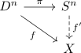

element of a homotopy group and map out of the sphere
Proposition
Let $X$ be a topological space, $\pi_n(X,x)$ the \(n\)-th homotopy group. Then there exists a natural correspondence between elements
- $g \in \pi_n(X,x)$
- pointed maps $f: (S^n, \rightarrow X$ up to homotopy relative to $1$.
- maps $f: D^n \rightarrow X$ with $f[\partial D^n] = \{x\}$ up to homotopy rel $\partial D^n$
Proof
1) $\implies$ 2)
2) $\implies$ 3)
follows from
\begin{align*}
S^n = D^n / (\partial D^n)
\end{align*}
as topological collapse and the universal property
